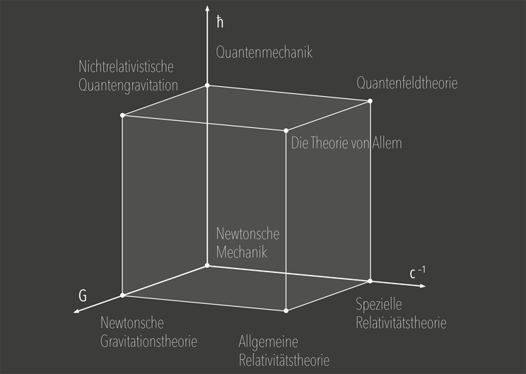

Die Naturkonstanten
Die Physik kennt die drei fundamentalen dimensionsbehafteten Naturkonstanten G, c und ℏ. Sie spannen den Würfel der Physik auf und definieren seine Theorien und Welten.
 Die Konstante G legt die Gravitationskraft zwischen zwei voneinander entfernten Massen fest. Implizit gemessen wurde sie erstmals Ende des 18. Jahrhunderts durch eine Dichtebestimmung der Erde. Auch die Krümmung der Raumzeit in der Allgemeinen Relativitätstheorie ist mit G verbunden. Die Geschwindigkeit von Licht im Vakuum c ist die am längsten bekannte Konstante. Ihr Wert ist mittlerweile exakt festgelegt. Erstmals bestimmt wurde c in der zweiten Hälfte des 17. Jahrhunderts aus astronomischen Beobachtungen. Sämtliche elektromagnetischen Wellen und Gravitationswellen breiten sich mit c aus. Das Plancksche Wirkungsquantum ℏ beschreibt in der Quantenmechanik das Verhältnis von Energie und Frequenz eines Photons und wurde zuvor Ende des 19. Jahrhunderts durch Max Planck entdeckt. Die drei Konstanten sind ausschließlich mit den Dimensionen für Länge, Zeit und Masse behaftet, so dass sich bei geeigneter Kombination ein System aus natürlichen Einheiten für Raum, Zeit und Materie ergibt: die Planck-Länge 1,616×10–35 m, die Planck-Zeit 5,391×10–44 s und die Planck-Masse 2,176×10–8 kg.
Im Modell des Würfels nicht berücksichtigt ist die Boltzmann-Konstante, aus der Planck eine vierte natürliche Einheit für die Temperatur ableitete. Er beanspruchte, dass diese vier natürlichen Einheiten »ihre Bedeutung für alle Zeiten und für alle, auch ausserirdische und aussermenschliche Culturen nothwendig behalten«. Der dreidimensionale Würfel der Physik weist der Thermodynamik und der statistischen Physik keinen gesonderten Ort zu, er kennt acht Theorien und sechs Welten.